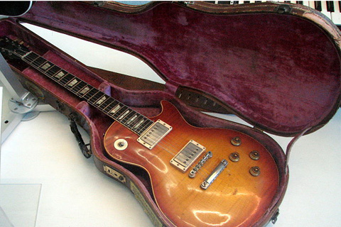
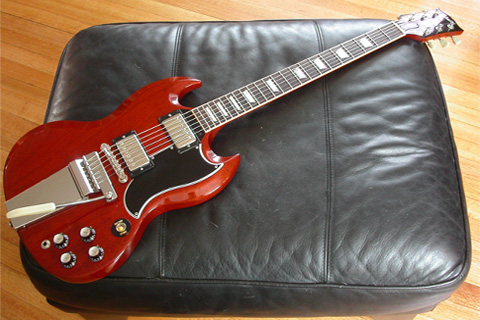
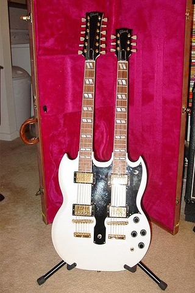
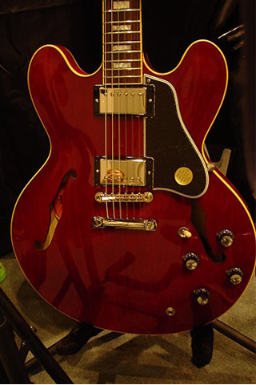
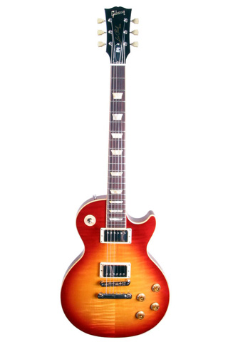

Gibson Guitar Corporation es una de las empresas más grandes de fabricación de Guitarras. Fue fundada en 1902 en Nashville, Tennessee, por Orville Gibson. En 1902, la Gibson Mandolin-Guitar Mfg. Co, Ltd. fue fundada para comercializar estos instrumentos. A poco tiempo de que la compañía inició sus actividades, la directiva presentó una moción para que a Orville H. Desde los años '20, Gibson fue responsable de muchas innovaciones en el diseño de las guitarras, y se convirtió en un líder en el mecardo de las guitarras tipo "archtop", como el modelo Gibson L5. En 1936 presenta la primera guitarra española electrificada "Electric Spanish", la ES-150, reconocida como la primera guitarra eléctrica.
En 1952, Gibson lanza el diseño de la guitarra de cuerpo macizo en colaboración con el popular guitarrista Les Paul. A finales de la década de 1950 se presentan varios diseños nuevos, incluidas la Gibson Explorer, la Flying V y la semi-acústica ES-335 usada comunmente por Tato Elera y Eric Johnson, y la introducción de las pastillas "humbucker" . La Les Paul se ofrecía en diferentes modelos (Custom, Standard, Special y Junior).
En 1961, el diseño del cuerpo de la Les Paul cambia, debido al alto coste de elaborar el cuerpo de arce y caoba.
El nuevo diseño del cuerpo tomó el nombre de Gibson SG. El modelo Les Paul volvió al catálogo de Gibson en 1968 debido a la influencia de guitarristas como Eric Clapton, John Lennon y Peter Green. Más tarde, las Les Paul y SG, se volverían muy populares entre los guitarristas de hard rock y heavy metal. Jimmy Page de Led Zeppelin, Ace Frehley ex guitarrista de Kiss, Dickey Betts de The Allman Brothers Band, Joe Perry ,Pappo, Brad Whitford de Aerosmith y Slash de Guns N' Roses serán conocidos por su preferencia por la Les Paul , y Jorge Constandse Angus Young de AC/DC, Tony Iommi de Black Sabbath, Glenn Tipton de Judas Priest y Joel O'Keefe y David Roads de Airbourne serán conocidos por preferir la SG.
Modelo Gibson Les Paul
 Modelo Gibson SG  Modelo Gibson EDS-1275  Modelo Gibson ES-335  Modelo Gibson Les Paul Ace Frehley 
Aqui les pongo un video de Slash interpretando la cancion "Anatasia" utilizando unas de estas guitarras.